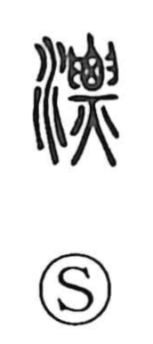

漂

Uncategorized
Kun: tadayou | On: hyo
to drift ・ to float ・ to wander
Explanation
漂 is a phono-semantic character: the water element sets the scene of movement on the surface of water, while 票—its phonetic and the source of the On reading hyo—originally depicts a corpse held up with both hands and committed to fire, the body standing out and quivering in the force of the flames. Transposed to water, this image becomes something rising and trembling as it moves, hence the senses “to drift about,” “to float,” and by extension “to wander,” as in 漂泊 (hyohaku). The same swaying motion also lies behind 瓢 (hyo), the gourd whose hanging rind swings to and fro.